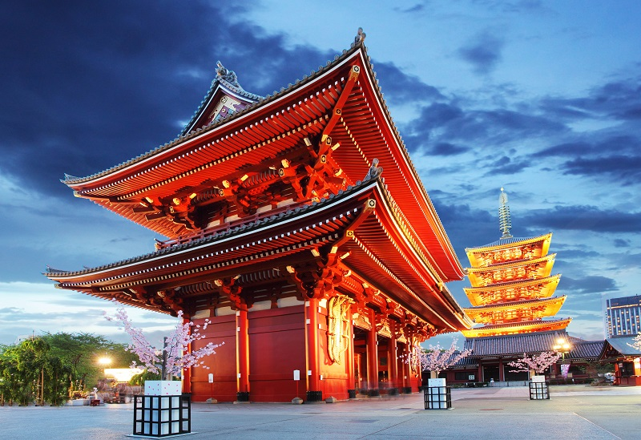
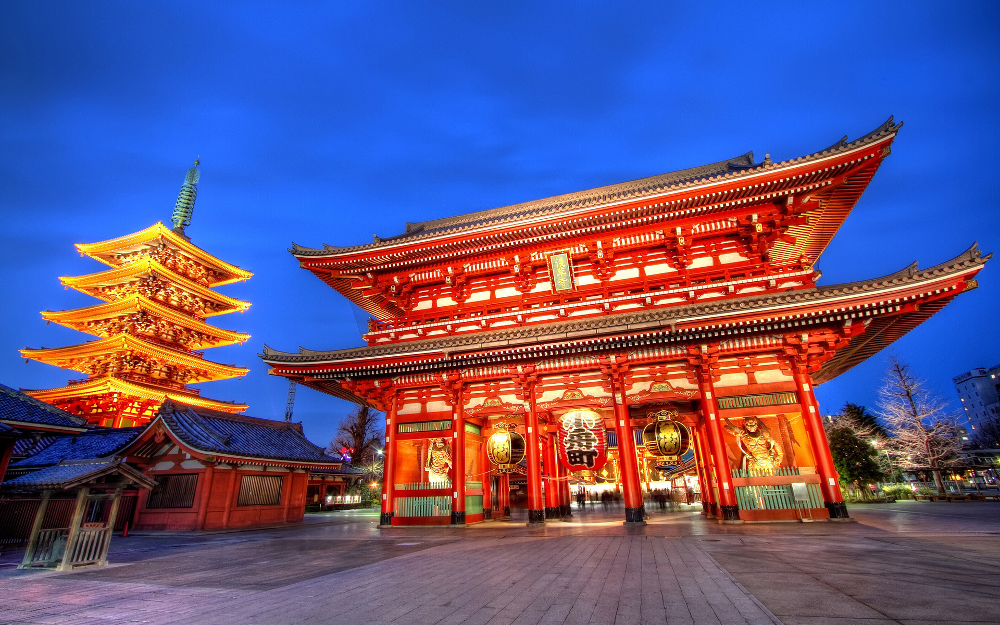

Sessoji Temple
The five-story pagoda of Sensoji Temple nestled amid high-rises shows the peaceful coexistence of old and new, spiritual and practical.
Legend says that in 628, two fishermen discovered a statue of Kannon, the goddess of mercy and, after several attempts to return it to the river, kept it. A temple was originally built in 645 to honor Kannon and the statue was hidden for protection. While structures on the site have been damaged and rebuilt over the centuries, the temple’s popularity has grown under Tokyo’s different ruling regimes.
Leading to the temple is Nakamise, a street of shops with beautifully presented Japanese finger food. Souvenirs, including fans and cotton yukata, casual clothing similar to kimonos, are also available for purchase. Even this shopping street is several centuries old.
Pass through two impressive gates before arriving at the main hall, a five-story pagoda, and the Asajusa Shrine. The distinctive shape of the outer gate, known as Kaminarimon (Thunder Gate), is often used as a symbol of Japan.
Admire the Buddhist architecture and statues of the inner buildings. The complex remains an active Buddhist temple with a high priest and monks practicing the spirituality of the Buddhist way of life.
Komagatado Hall holds the Bodhisattva Bato-kannon (a statue of Kannon), which you can view on the 19th of every month and during a major festival every year on April 19. The area has many other special events, including the May festival of the Asakusa Shrine, the Sanja Matsuri and a Samba Carnival in August.
Admission to the temple is free. The grounds are always open while the main hall is open daily from morning to early evening. Subway and rail lines will get you to Asakusa station, which is just outside the temple entrance.